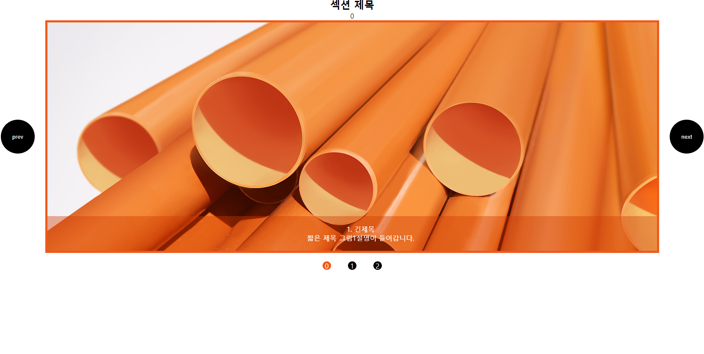
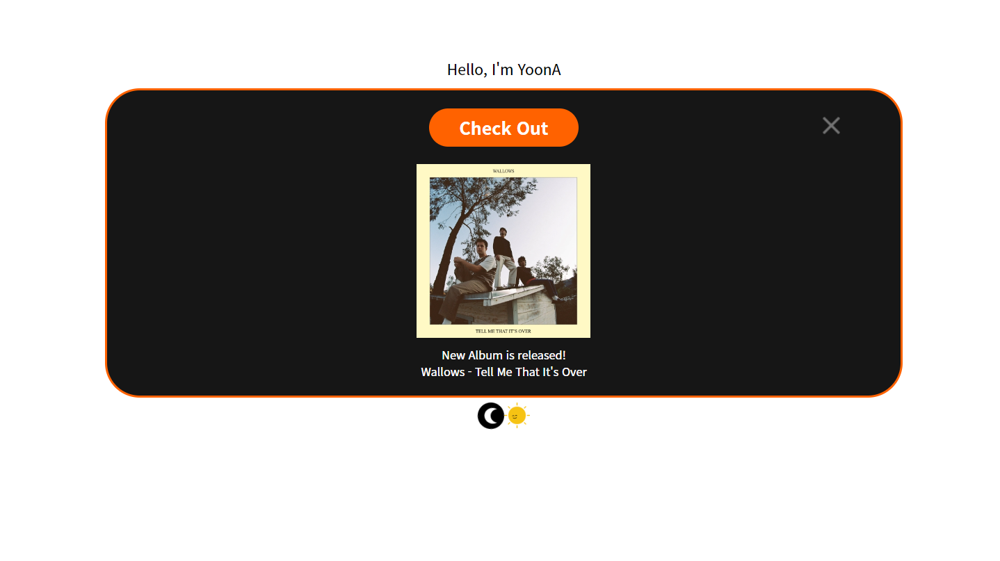
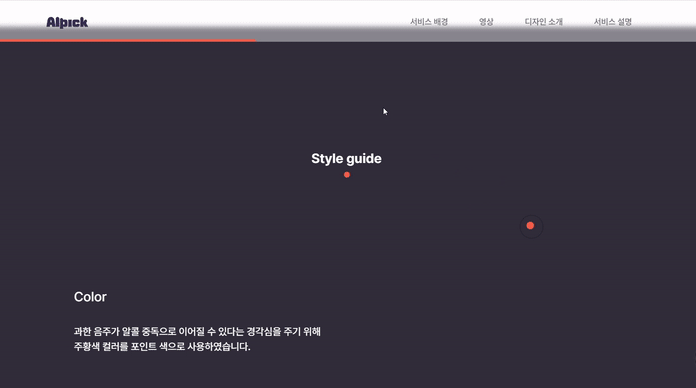
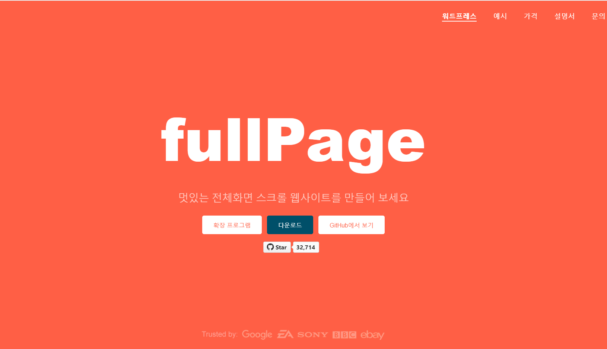
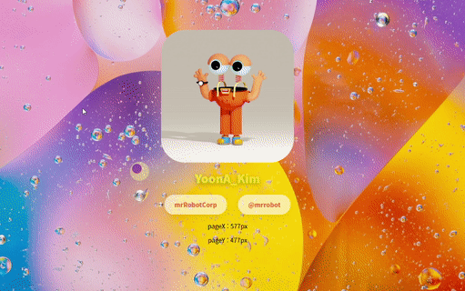
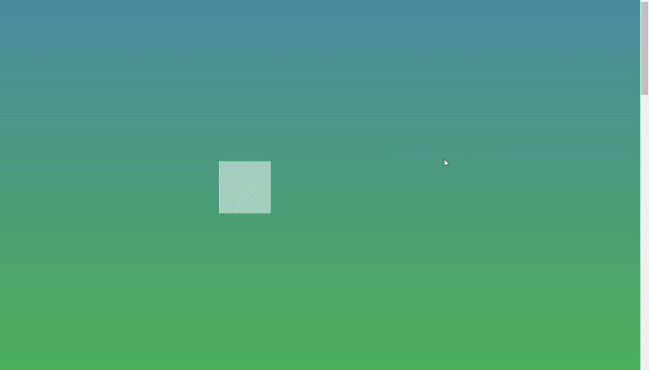
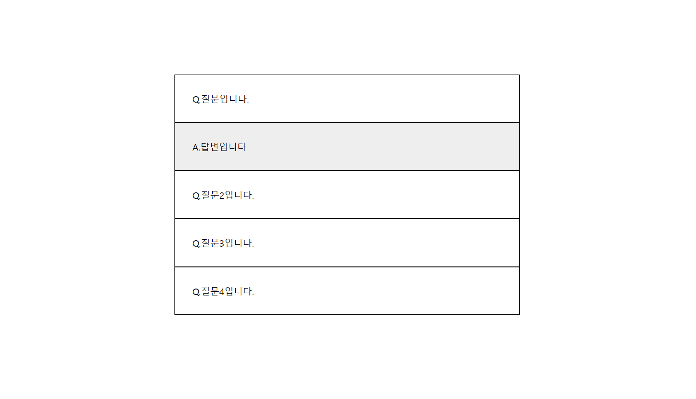
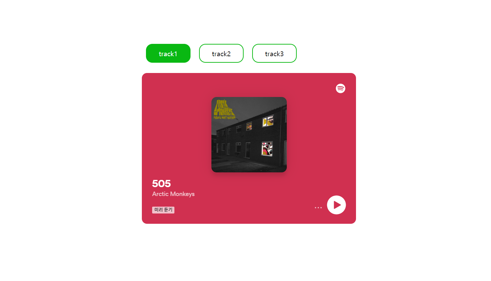
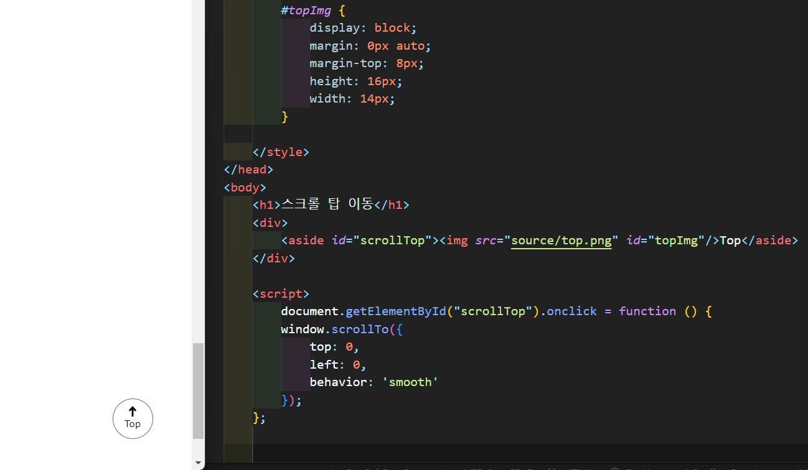

{ Vanilla JS }
다른 라이브러리 사용이 아닌 순수 자바스크립트의 사용을 공부하였습니다. 자바스크립트 라는 강의를 수강하면서 기초 문법부터 차근차근 공부해왔고, 추가로 익히고 싶은 기능들을 찾아보며 구현해보았습니다.
다른 라이브러리 사용이 아닌 순수 자바스크립트의 사용을 공부하였습니다. 자바스크립트 라는 강의를 수강하면서 기초 문법부터 차근차근 공부해왔고, 추가로 익히고 싶은 기능들을 찾아보며 구현해보았습니다.
순수 자바스크립트를 사용하여 gnb 메뉴를 반응형으로 제작하였습니다. button을 생성한 후, window의 innerWidth값을 조건으로, 클릭 시 햄버거 메뉴 창의 width 값 스타일을 100%로 설정하고 햄버거 버튼의 animation은 active class를 추가하여 적용하였습니다.

인디케이터, 좌우 이동 버튼 모두 동적 요소로 생성하였습니다. 이미지 크기에 맞춰 이동했을 때의 left, right 값을 새로운 class에 적용하였고, 동적으로 생성한 버튼에 setAttribute로 해당 클래스 속성을 넣었습니다. for 반복문을 통해 ( 이미지 크기 X 이미지 개수 ) 만큼의 이동 값을 적용하여 style을 설정하였습니다.
setInterval 이벤트를 통해 1초씩 매 시간을 업데이트하여 아날로그 시계 형식으로 제작하였습니다. 시계 안 요소는 createElement, setAttribute를 통해 동적으로 생성하였습니다. html 안에서 올바른 마크업을 위해 appendChild를 사용하여 부모 요소와 자식 요소를 나눠주었습니다. 출력 할 시간은 new Date()를 통해 구하였고, 출력되는 시간을 계산하여 시침, 분침 요소에 style의 각도 값으로 주었습니다. 각도 계산은 전체 360도에서 시간은 12시간으로 나누어 시간 당 30도씩, 분은 60분으로 나누어 6도씩, 초 또한 60초로 나누어 6도씩 transform을 주었습니다.

레이어 팝업 요소를 동적으로 생성 후, 그 안 close 버튼은 click 이벤트를 설정하였습니다. 버튼 클릭 시 레이어 팝업의 style을 display none으로 설정하였습니다.
다른 라이브러리 사용이 아닌 순수 자바스크립트의 사용을 공부하였습니다. 자바스크립트 라는 강의를 수강하면서 기초 문법부터 차근차근 공부해왔고, 추가로 익히고 싶은 기능들을 찾아보며 구현해보았습니다.
가로스크롤은 GreenSock에서 만든 JS 라이브러리인 scrollTrigger를 활용하였습니다. scrollTrigger 플러그인을 등록한 후, 가로스크롤을 적용하고 싶은 요소를 trigger를 통해 시작 지점으로 설정하였습니다. 또한 end, pin, scrub 등의 속성을 설정하여 자연스럽게 활용시켜보았습니다.
React를 시작하기에 앞서 node.js를 통해 개발환경을 셋팅하였습니다. 기존의 react 코드를 import하여 js 파일 안에서 코드를 수정하였습니다. 수정된 react 파일을 build하여 배포하고, localhost에서 확인활 수 있습니다.

전체 화면을 스크롤 페이지로 활용할 수 있는 fullPage 라이브러리를 통해 웹을 구현하였습니다. fullPage 기능이 어떤 구조로 작동되고 어떻게 활용할 수 있는지 익혀보았습니다. fullPage 기능을 줄 요소의 class 값을 주는 것으로 제어하고, 하나의 section이 한 페이지로 인식된다는 점을 알게되었습니다. 또한 auto-height 등의 옵션 값을 통해 다양하게 section을 제어하였습니다.
GSAP 라이브러리를 사용하여 마우스 요소를 커스텀하였습니다. cursor를 대신 할 div 요소를 js로 동적으로 생성한 후, 해당 요소의 위치 값을 cursor의 위치 값과 적당한 차이를 두고 따라가도록 설정하였습니다. duration과 left, top 등의 속성으로 자유롭게 커스텀 하였고, 해당 이벤트는 mousemove 시에 이벤트가 실행되도록 설정하였습니다.
다른 라이브러리 사용이 아닌 순수 자바스크립트의 사용을 공부하였습니다. 자바스크립트 라는 강의를 수강하면서 기초 문법부터 차근차근 공부해왔고, 추가로 익히고 싶은 기능들을 찾아보며 구현해보았습니다.
document의 scrollTop 값과 변화를 주고 싶은 요소의 높이 값을 변수로 선언합니다. if문을 통해 scrollTop의 값이 타겟인 요소의 높이 값과 동일해지면 변화를 줄 수 있는 css class를 addClass를 통해 추가하고, 기존의 다른 설정값이었던 class는 removeClass를 통해 제거하여 주었습니다. 이런 방식을 통해 스크롤에 따른 인터렉션을 구현하였습니다.
클릭 시 관련 요소 박스가 늘어나면서 해당 내용이 보여지는 기능을 구현하였습니다. click() 이벤트를 사용하여, 처음 보여지는 요소를 타겟으로 설정하였습니다. html 구조 상 타겟의 바로 다음 요소가 나오도록 설정할 것이므로, next() 기능으로 요소를 가져왔습니다. 이후 slideToggle을 통해 자연스럽게 나타나도록 설정하고, 클릭 시 나타나고 사라지는 것이 반복되도록 하였습니다.
파일 박스와 같은 tab menu를 생성하여 클릭 시 보이는 내용이 다르도록 설정하였습니다. 콘텐츠 박스는 기본 값으로 display none 설정하였고 click() 이벤트 발생 시에 addClass()를 통해 active class를 추가하였습니다. active class는 콘텐츠가 나타날 때 보이는 css 값을 준 class로 설정하였습니다.
top으로 이동할 수 있는 div요소를 생성한 후, scrollTo() 이벤트를 통해 top 요소 클릭 시 document의 top 값이 0인 맨 위로 이동하도록 설정하였습니다. 자연스러운 움직임을 위해 해당 요소에 jQuery로 애니메이션을 추가로 적용하였습니다. 해당 top 버튼 요소의 height 값을 변수로 선언한 후, 해당 값이 document의 scroll 값보다 높아지면 즉, 스크롤이 어느 이상 움직이면 fadeIn 하여 보이도록 설정하였습니다. 반대로 top 버튼 요소가 불필요한 스크롤 맨 위에 있을 시에는 fadeOut하여 보이지 않도록 설정하였습니다.
